To measure a photograph or a painting, you first need its line
drawing. The Mid-Level Vision (MLV) Toolbox traces photographs with
learned models (structured edges or the Segment Anything model).
mlvtoolbox bundles no model weights;
trace_rgb() takes the extractor as a backend
function and records it with the drawing. This vignette describes the
package’s own extractor, which needs no weights,
extract_lines(), and its backend form,
xdog_lines():
img <- read_mlv_image("painting.jpg")
drawing <- trace_rgb(img, backend = xdog_lines)The extractor aims to follow the image’s form (outlines, folds and major shading boundaries) rather than individual brush strokes, places each line on its edge to within about a pixel, and is deterministic. It is a filter, not a model. Each stage is a published image operation, except a small step of this package’s own that places lines on the edges and draws thin strokes once. The extraction definition and parameter values are recorded with the result.
The running example
The example is Luis Meléndez’s Still Life with Fish, Bread, and
Kettle (c. 1772, oil on canvas; The Cleveland Museum of Art,
accession 1983.97), a public-domain painting released under Creative
Commons Zero (CC0) through the museum’s Open Access programme. The
package includes it downsampled to 640 × 458 pixels (65 KB);
inst/extdata/README.md gives its source and licence. That
is the width at which the defaults were tuned.
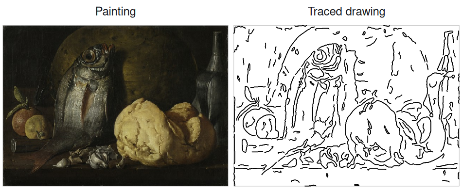
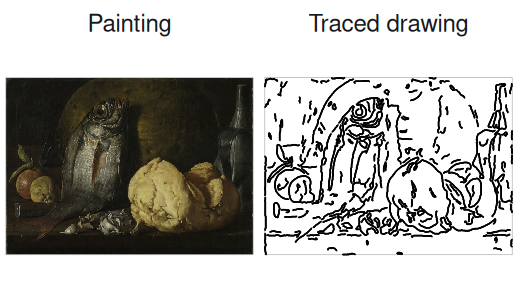
The painting (left) and its drawing at the default settings (right): 323 contours, 13277 px of line, 65 of them shorter than 15 px. The arc of the round copper vessel behind the fish, the fish’s head, the loaves, the citrus fruit and the table edge are recognisable; the pewter vessel at right, dark on a dark wall, is broken into pieces, and the wall’s streaks and the fish’s scales leave many short marks.
painting <- system.file("extdata", "melendez-still-life.jpg", package = "mlvtoolbox")
img <- read_mlv_image(painting)
dim(img)
#> [1] 458 640 3
drawing <- trace_rgb(img, backend = xdog_lines)
drawing
#> <mlv_drawing> 323 contours, 11467 segments, 640 x 458 pixelsStage by stage
line_extraction_stages() runs the same computation as
extract_lines() and returns every intermediate image. The
figures below show them for the fish’s head, numbered as the steps are
taken, on the same canvas, so they can be compared like the pages of a
flip-book.
Lightness. The image is converted from sRGB to CIE
L* lightness (white is 100), divided by 100. Lightness is close to
perceived brightness, so equal steps are about equally visible across
the range. With colour = TRUE the next two stages also use
the colour axes a* and b*; the line decision itself always uses
lightness.
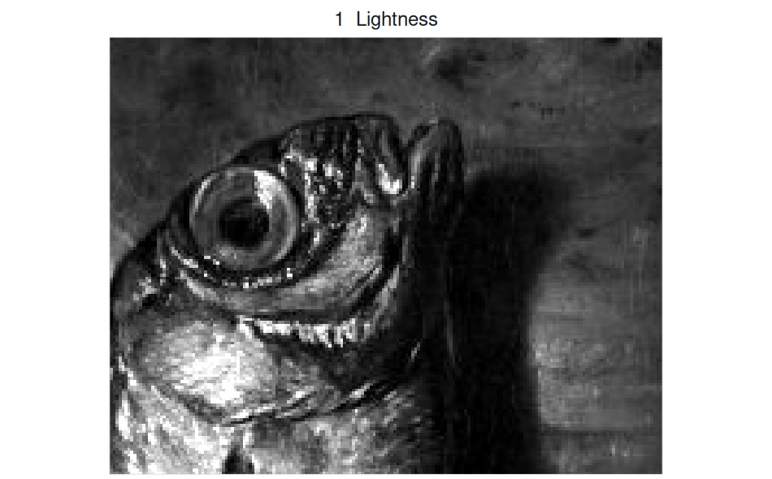
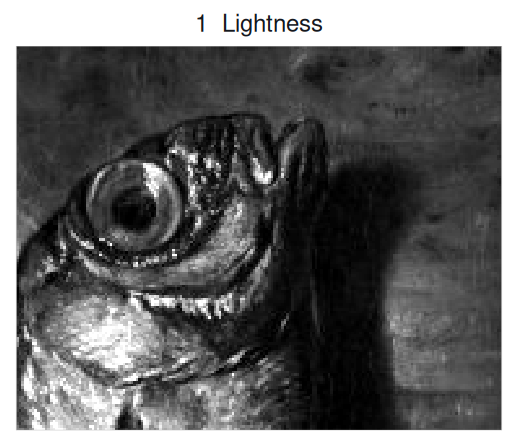
Stage 1. Brushwork is finer than form: the head’s scales are speckled and the copper vessel behind it is mottled, both finer than the outlines the drawing should keep. CIE lightness of the fish’s head, on a grey scale stretched from L* = 6 (black) to 61 (white), the window’s 1st and 99th percentiles.
Pre-filter. An anisotropic Kuwahara filter
(Kyprianidis, Kang and Döllner 2009) replaces each pixel with the mean
of the most uniform part of an elliptical neighbourhood, aligned with
the local edge and split into eight overlapping sectors. Within a region
it averages away texture; at a boundary, the uniform sectors lie on one
side, so the boundary stays sharp. smooth sets the radius,
here 5 px.
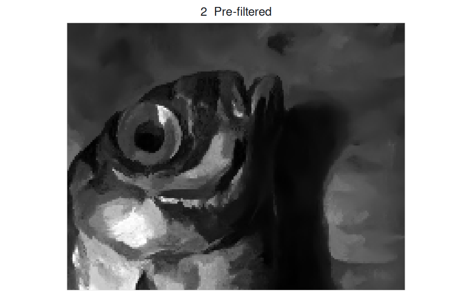
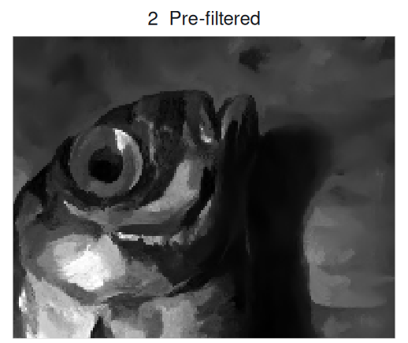
Stage 2. The pre-filter flattens texture but not outlines: the scales and the mottling merge into flat patches while the head, eye and gill stay sharp. Kuwahara radius 5 px; 32% of the window’s pixels changed by more than 2 L* units. Grey scale as in Stage 1.
Edge tangent flow. The structure tensor of the
smoothed image, the local average of the gradient’s outer product at
scale sigma_c, gives at every pixel the direction along
which lightness changes least: the edge tangent (Kyprianidis and Döllner
2008). Its anisotropy, from 0 to 1, says how clearly one direction
dominates.
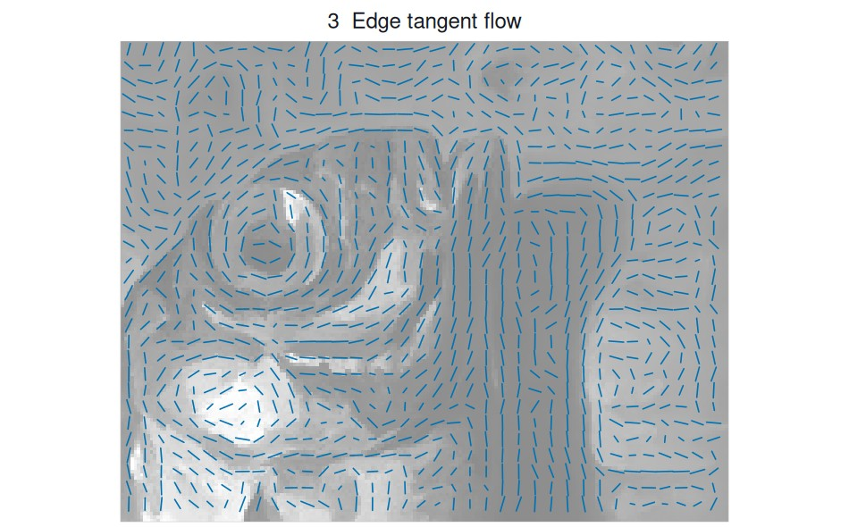
Stage 3. The tangents ring the eye and run along the outlines of the head; in the background they follow faint streaks and turn from patch to patch. Blue segments at every fifth pixel over the faded pre-filtered image, 1 to 5 px long as the anisotropy rises from 0 to 1 (median 0.72 here).
Flow-based difference of Gaussians. At every pixel a
one-dimensional difference of Gaussians,
G_sigma - tau * G_(k sigma), is taken across the flow
(Kang, Lee and Chui 2007). It is negative on the dark side of an edge
and positive on the light side. With tau just below 1, a
uniform area keeps a small positive value, so faint texture does not
cross zero.
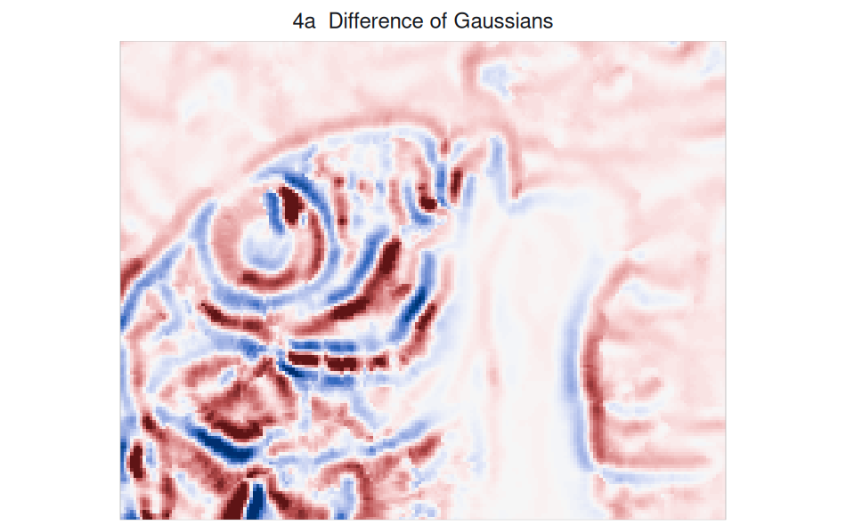
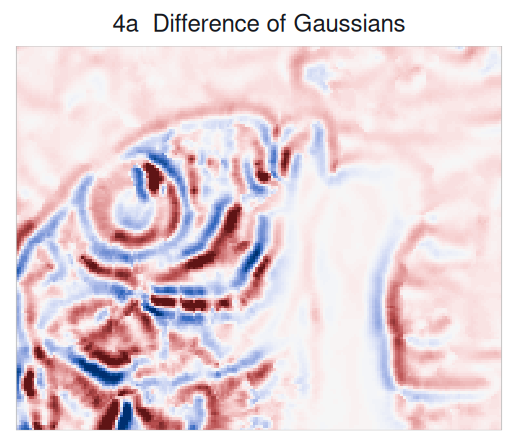
Stage 4a. Each outline becomes a pair of bands, blue on its dark side and red on its light side; the background’s remaining texture gives weak, broken responses. Difference of Gaussians across the flow (sigma = 2 px, k = 1.6, tau = 0.98), blue below zero, red above, saturating at +/- 0.038, a third of the image’s largest value (1% of this window is clipped).
The response is then averaged along the flow, over a Gaussian of
scale sigma_m following each tangent streamline. Along an
outline the averaging adds up responses of the same sign and joins short
gaps; across texture it mixes signs and cancels. A streamline stops once
it has turned more than 20 degrees from where it started, so corners are
not rounded off.
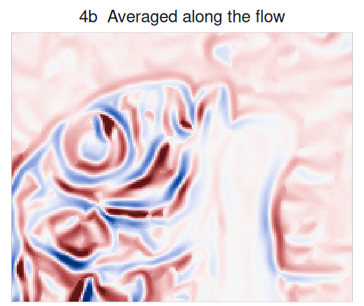
Stage 4b. Averaging along the flow (sigma_m = 3 px) joins the blue bands and thins the background speckle: the window’s separate blue patches fall from 59 to 32. Palette as in Stage 4a. The blue, where the response is below eps = 0, is the ink band of Stage 5.
Threshold and placement. The XDoG threshold
(Winnemöller, Kyprianidis and Olsen 2012) turns the response into an ink
band, and the band lies on the dark side of each edge, about 1.2
sigma deep. A drawing traced from the band would sit beside
the edges. The next step is this package’s own: each line is drawn on
the boundary between the band and its light side, at the pixel nearer
the edge. A thin stroke is drawn once, along its middle: a dark band no
wider than 3 sigma with light on both sides, or a narrower
light gap (up to about 4 px at the default sigma) with dark
on both sides. Groups of line pixels smaller than
min_component pixels are removed.
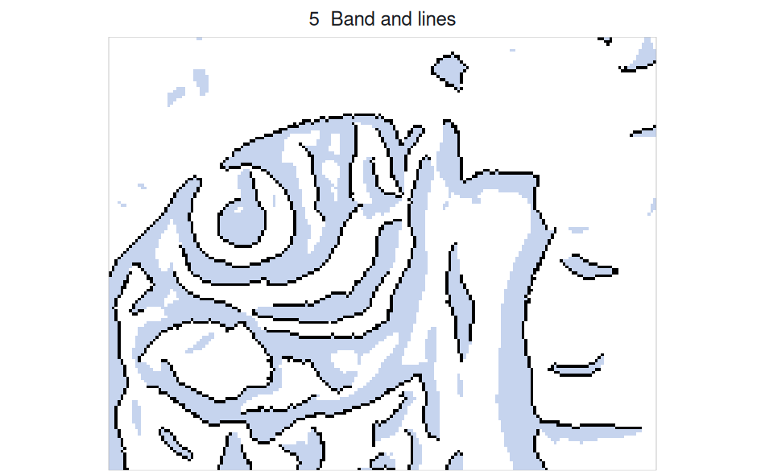
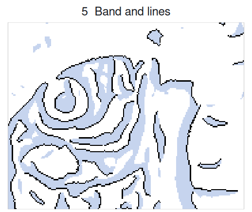
Stage 5. The lines (black, 1612 px) run along the light-side edge of the ink band (pale blue, 7188 px), where the lightness changes, not through its middle. Isolated band patches in the background are outlined too, unless the outline has fewer than min_component = 20 pixels.
trace_contours(), which trace_rgb() calls,
then thins the mask to one pixel and traces it into contours, splitting
them where lines meet.
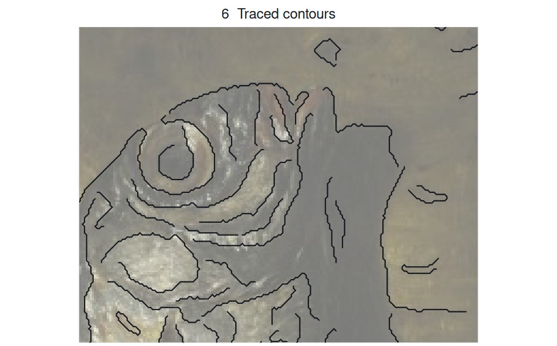
Stage 6. Each contour runs along the boundary it came from rather than beside it: the outline of the head, the pupil and the curves of the gill are each one or a few contours. Traced contours (black; 42 touch this window) over the faded painting. The lines are pixel chains; simplify in trace_contours() turns them into fewer, straighter segments.
How the parameters change the drawing
Two parameters do most of the work. sigma sets the scale
of the edges that are drawn: small values follow fine detail, large
values only broad boundaries. smooth sets the radius of the
pre-filter: 0 turns it off and draws texture.
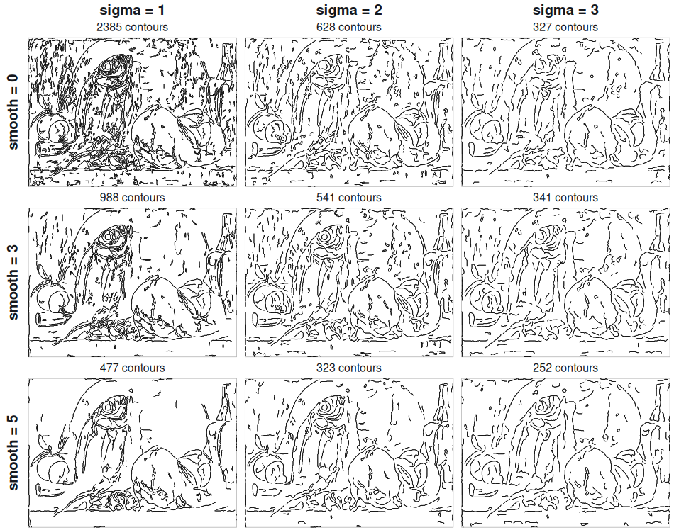
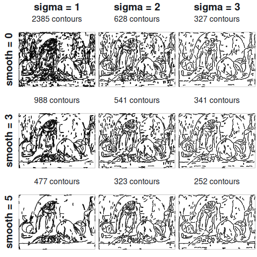
Larger sigma gives fewer lines in every row; smoothing matters most at sigma = 1 (2385 contours unsmoothed, 477 at smooth = 5) and little at sigma = 3. Columns: sigma = 1, 2, 3 px; rows: smooth = 0, 3, 5 px; the default is bottom middle. The median contour grows from 7 px (top left) to 30 px (bottom right).
The defaults (sigma = 2, smooth = 5,
tau = 0.98, sigma_m = 3,
min_component = 20) were chosen by eye on four
public-domain paintings 640 px wide, this one among them: two still
lifes with crisp outlines in dark rooms, a landscape built of thick
directional strokes, and a landscape of broad colour fields. They are a
judgment, not an optimum. sigma, sigma_c,
sigma_m and smooth are in pixels, so an image
twice as large wants them about twice as large.
Measuring the drawing
A traced drawing is an ordinary mlv_drawing, so every
measure in the package applies to it. Per-contour features:
features <- feature_table(drawing)
dim(features)
#> [1] 323 30
round(head(features[, c("orientation_1", "orientation_5", "length_4", "curvature_1")], 3), 3)
#> orientation_1 orientation_5 length_4 curvature_1
#> 1 3011.203 2479.814 0 302.379
#> 2 633.787 4436.508 10000 672.232
#> 3 0.000 8146.144 0 113.026The detector finds 21 junctions in the extracted drawing. FDoG can break contours at points where they meet in the source image. Junctions at occlusions shows how to enable short repairs supported by the image.
junctions <- detect_junctions(drawing)
table(junctions$type)
#>
#> Arrow T Y
#> 5 12 4The medial axis describes the space between the lines. Parallelism is high where two lines run alongside each other at a constant distance, such as the stripes of the fish’s body or the sides of the pewter vessel:
mat <- analyse_mat(drawing, properties = "parallelism")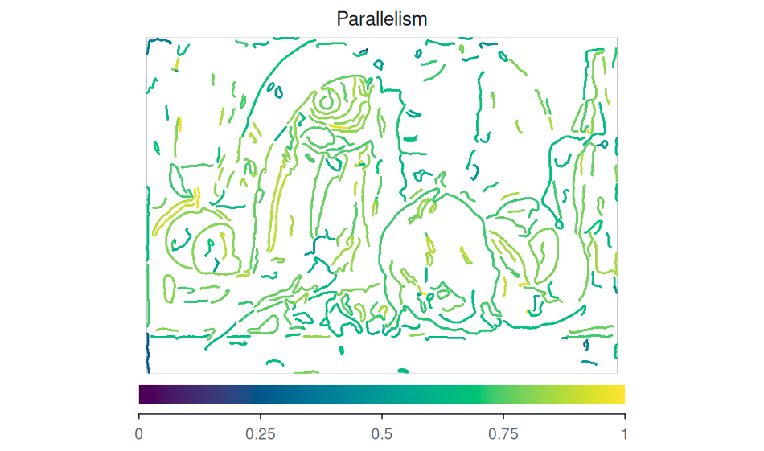
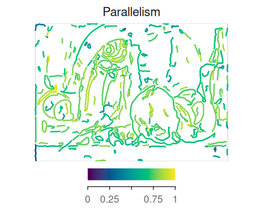
Each contour coloured by its mean parallelism, the mean of the scores mapped onto its pixels (Viridis, 0 to 1; median over contours 0.75). Lines that run beside another at a steady distance, such as the stripes of the fish’s body, score near the top; outlines facing open space, such as the arc of the copper vessel, score lower.
Measurements can also select contours. Here the drawing is split by mean parallelism into two halves of at most equal total length. The split does not follow objects; it separates lines that run beside another line from lines that face open space.
halves <- split_contours(mat$drawing, property = "parallelism", fraction = 0.5)
c(top = length(halves$top$contours), bottom = length(halves$bottom$contours))
#> top bottom
#> 161 161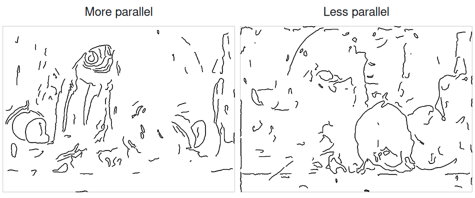
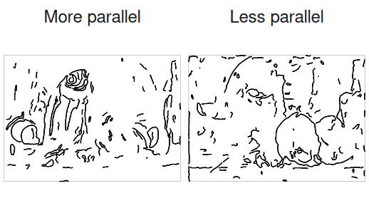
The more parallel half of the drawing (left: 161 contours, 6621 px) and the less parallel half (right: 161 contours, 6618 px), each holding at most half the total length. 1 contour (39 px), ranked near the middle, would overflow either budget and belongs to neither. Compare the stripes of the fish’s body (left) with the arc of the copper vessel (right).
Recording the extraction
The mask carries its definition, and trace_rgb() copies
it into the drawing, so a drawing states how it was made:
drawing$source$provider_version
#> [1] "fdog-xdog-1"
str(drawing$source$extraction_parameters[c("sigma", "smooth", "tau")])
#> List of 3
#> $ sigma : num 2
#> $ smooth: num 5
#> $ tau : num 0.98A feature specification can fix the extraction as well as the
measures. trace_rgb() then passes the specification’s
parameters to the backend and checks that the mask it returns was made
with them; a specification naming another version of the extractor is
rejected.
spec <- feature_spec(extraction = list(lines = list(sigma = 2, smooth = 5)))
spec$definitions[["lines"]]
#> [1] "fdog-xdog-1"
same <- trace_rgb(img, backend = xdog_lines, spec = spec)
identical(same$contours, drawing$contours)
#> [1] TRUE
try(feature_spec(extraction = list(provider = "xdog_lines", provider_version = "fdog-xdog-0")))
#> Error : unsupported line extraction definition 'fdog-xdog-0'Using a learned extractor
A learned edge or contour model fits the same slot. A backend is any
function that takes the RGB array and returns a logical ink mask of the
same size; if it attaches an "extraction" attribute,
trace_rgb() records its version and parameters. The package
bundles no model weights, so the model, its weights and its
preprocessing remain the backend’s responsibility. A sketch, with a
hypothetical predict_edges() that returns edge
probabilities:
model_lines <- function(image, threshold = 0.5) {
probability <- predict_edges(image) # your model, your weights
mask <- probability > threshold
attr(mask, "extraction") <- list(method = "my-edge-model-2024-06",
parameters = list(threshold = threshold))
mask
}
drawing <- trace_rgb(img, backend = model_lines, threshold = 0.4)
spec <- feature_spec(extraction = list(provider = "model_lines",
provider_version = "my-edge-model-2024-06"))The same mechanism works for any function. Here a threshold on lightness stands in for a model: it marks the darkest twentieth of the painting as ink, which is only useful for showing the provenance it records.
dark_lines <- function(image, fraction = 0.05) {
lightness <- line_extraction_stages(image, smooth = 0)$lightness
mask <- lightness < quantile(lightness, fraction)
attr(mask, "extraction") <- list(method = "darkest-fraction-1",
parameters = list(fraction = fraction))
mask
}
toy <- trace_rgb(img, backend = dark_lines)
toy$source[c("extraction_provider", "provider_version", "extraction_parameters")]
#> $extraction_provider
#> [1] "dark_lines"
#>
#> $provider_version
#> [1] "darkest-fraction-1"
#>
#> $extraction_parameters
#> $extraction_parameters$fraction
#> [1] 0.05Limits
- Lines are decided on lightness. A boundary between two colours of
equal lightness is not drawn, with or without
colour = TRUE, which only lets colour steer the flow and the pre-filter. - The pre-filter rounds sharp corners slightly: at the default radius a square’s traced corner lies up to about 1.2 px inside the true corner.
- It also removes dark strokes narrower than about 2 px unless they
lie along a pixel row or column; light strokes survive from 1 px.
smooth = 0keeps them, so use it for thin line art. - Parallel dark strokes 2 to 4 px apart (hatching) merge and are drawn as the pair’s two outer outlines, with no line between them.
- Lines are placed to the nearest pixel. On synthetic edges the traced
contours lie within 1 px of the true boundary (about 0.5 px on straight
edges away from the image border), and a traced disc has the right
length to within 2% after
simplify = 1. - All scales are in pixels. The defaults were tuned on four paintings
640 px wide; images of other sizes want
sigma,sigma_c,sigma_mandsmoothscaled with them.
Junctions at occlusions
Three regions in this synthetic image meet at a single T junction.
The thresholded FDoG band loses part of the vertical branch. With the
default settings, the simplified branch stops 5 pixels short of the
horizontal contour. A positive junction_gap lets the
extractor bridge a short gap when the edge contrast continues in the
source image.
occlusion <- matrix(0.80, 256L, 256L)
occlusion[1:128, 129:256] <- 0.50
occlusion[129:256, ] <- 0.15
occlusion_stages <- line_extraction_stages(occlusion)
occlusion_drawing <- trace_contours(occlusion_stages$mask, simplify = 1)
repaired_mask <- extract_lines(occlusion, junction_gap = 6)
repaired_drawing <- trace_contours(repaired_mask)
c(default = nrow(detect_junctions(occlusion_drawing)),
repaired = nrow(detect_junctions(repaired_drawing)))
#> default repaired
#> 0 1The repair gives the default detector one T. For an RGB image, enable
the same option with
trace_rgb(img, backend = xdog_lines, junction_gap = 6). The
drawing records the distinct extraction definition and gap limit.
Widening the detector’s tolerance can also recover this T after simplification, but it can join strokes that genuinely stop short. The repair checks the contrast across the projected branch in the original image and skips bridges that would also touch a third piece of ink. It can still miss short or weak branches. Check junction counts against annotated examples at the resolution and contrast of your images. See issue #2.
For line art whose junctions are defined by stroke centre lines, pass
a verified centre-line mask directly to trace_contours(). A
filled 5-by-5 grid in the synthetic test yields 17 closed outlines and
zero X junctions through FDoG. Its one-pixel centre-line mask yields 25
X junctions.
References
Kang, H., Lee, S. and Chui, C. K. (2007). Coherent line drawing. Proceedings of the 5th International Symposium on Non-Photorealistic Animation and Rendering, 43–50.
Kyprianidis, J. E. and Döllner, J. (2008). Image abstraction by structure adaptive filtering. Proceedings of EG UK Theory and Practice of Computer Graphics, 51–58.
Kyprianidis, J. E., Kang, H. and Döllner, J. (2009). Image and video abstraction by anisotropic Kuwahara filtering. Computer Graphics Forum, 28(7), 1955–1963.
Kyprianidis, J. E. (2010). Anisotropic Kuwahara filtering with polynomial weighting functions. Proceedings of EG UK Theory and Practice of Computer Graphics, 25–30.
Winnemöller, H., Kyprianidis, J. E. and Olsen, S. C. (2012). XDoG: an eXtended difference-of-Gaussians compendium including advanced image stylization. Computers & Graphics, 36(6), 740–753.